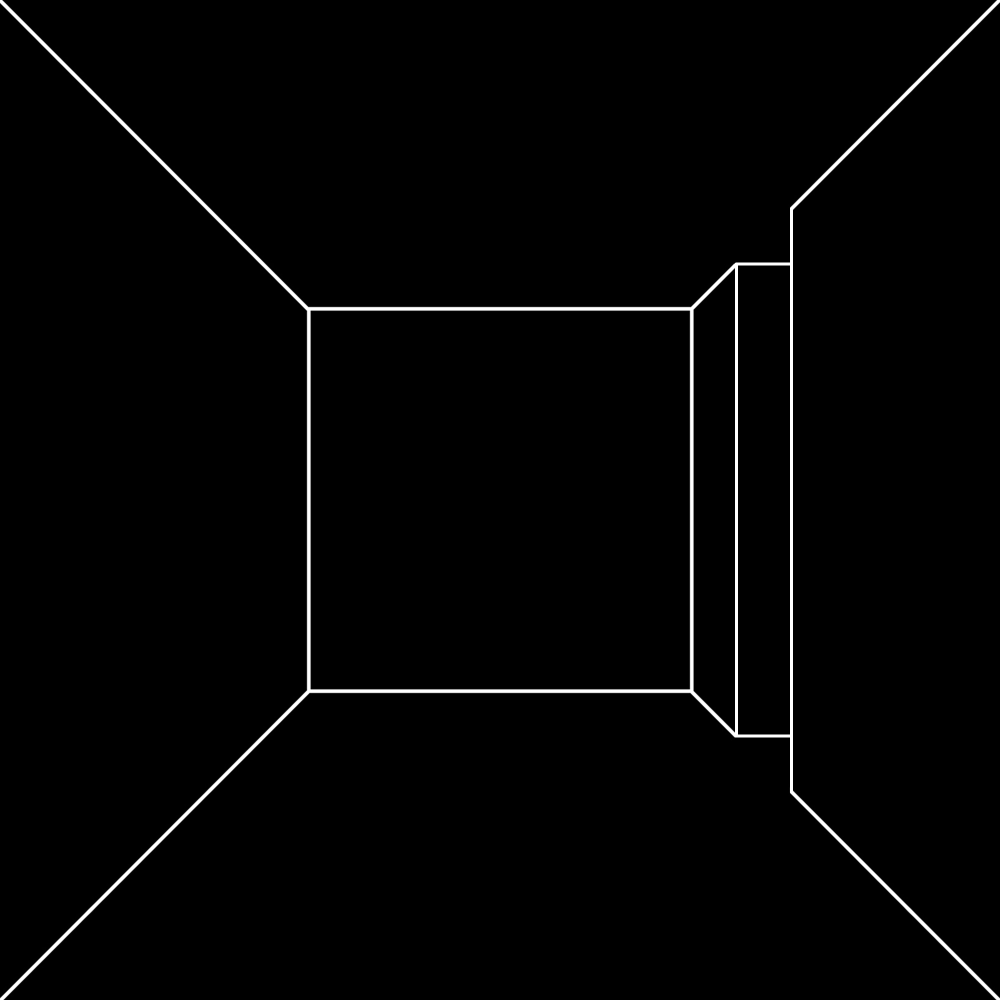

I believe the poem is an act of the mind. I think it is easier to talk about the end of a poem than it is to talk about its beginning. Because the poem ends on the page, but it begins off the page, it begins in the mind. The mind acts, the mind wills a poem,
often against our own will; somehow this happens, somehow a poem gets written in the middle of a chaotic holiday party that has just run out of ice, and it's your house.